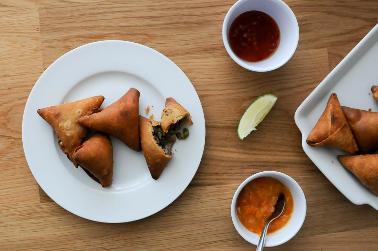

Beef Samosa

Description
Samosa is a triangular-shape savory pastry fried in oil, containing spiced vegetables, ground beef/lamb, ground chicken or fish. In the Kenyan Cuisine, samosas are considered as exotic snacks of all times. Below is a simple recipe for ground beef samosas which are my favorites!
Ingredients
Beef Samosa filling
- 1 kg ground beef
- ¼kg fresh or frozen green peas
- 2 red onions, finely chopped
- 5 cloves of garlic, grated
- 1-inch fresh ginger, grated
- 1 fresh green chilli, finely chopped (Optional)
- ½ teaspoon of turmeric
- ½ teaspoon cumin seeds
- 1 bunch of fresh coriander, coarsely chopped
- Juice of ½ a lemon (optional)
- Salt and ground pepper to taste
Dough pastry
- 4 cups of all-purpose flour
- 1 teaspoon of salt
4 tablespoons of any vegetable oil
1 ½ cups of warm water
*Extra flour for rolling
Instructions
For the beef samosa feeling
- On a medium heat, cook meat in uncovered frying pan or wok. Stir constantly to ensure all lumps are broken. Before the water completely evaporates, add peas, onions, ginger, garlic, chili and spices. Season with salt and pepper.
- Remove from heat and stir in fresh coriander and the lemon juice
- Remove from heat and allow to cool completely
For the dough pastry
- In a mixing bowl, mix together flour, salt and vegetable oil until it is crumbly. Slowly add water little at a time as you knead the dough. Keep kneading for 15-20 minutes until it is soft, smooth and not sticking in either your hands or the walls of your bowl
- Cover dough pastry in a slightly greased container and let it rest for 30minutes to 1 hour at a room temperature
- Dived the dough into 4-5 equal balls preferably not very big
- Roll out a ball into ca. 6-inch diameter circle, brush a little oil on it and lightly sprinkle some flour
- Repeat this process with all the other balls of dough while gently laying them on top of each other
- Use your rolling pin to thinly roll out the pilled dough into a diameter of 10-12 inches
- Preheat a skillet on a medium heat and place the rolled out dough on top of it. Let it cook until it starts to bubble up (make sure not to burn it). Flip it over and cook the other side until it bubbles up too
- Neatly place your half cooked wraps on a clean surface and using a knife, quarter them into 4 equal parts (with each part forming a triangle shape)
- Separate the triangles very gently and cover them with a clean cloth to avoid drying up
Preparing Samosa pockets and deep frying
- In a small mixing bowl, mix ½ a cup of flour with a little water and make a thick flour paste to serve as a “glue” for sealing samosa pockets
- Follow the simple steps showed below to prepare samosa pockets
- Fold all samosa pockets first in a cone shape before filling them with the cooled meat. Use a small ice cream scoop or a tablespoon to fill the samosa pockets (Do not overfill them)
- Seal using the “glue” you prepared (Seal them very well otherwise they’ll open up when frying!)
- Filled and sealed samosa pockets can be stored in the refrigerator and be deep fried the next day or one can also deep freeze them as desired
- Heat up oil in a deep frying pan or Wok
- Test your oil by gently dropping a small piece of dough into the oil. If the dough stays at the bottom for a couple of seconds then rises to the surface then your oil is ready for frying but if it rises up immediately after dropping it into the oil, then your oil is too hot and you need to reduce the heat. Too hot oil will only cook the outside and the inside will be uncooked especially if the samosas were frozen
- Deep fry samosa till golden brown on both sides and crispy, use a kitchen paper or a clean towel to drain off any excess oil
- Serve hot or cold accompanied by a chutney of any kind or a piece of fresh lime